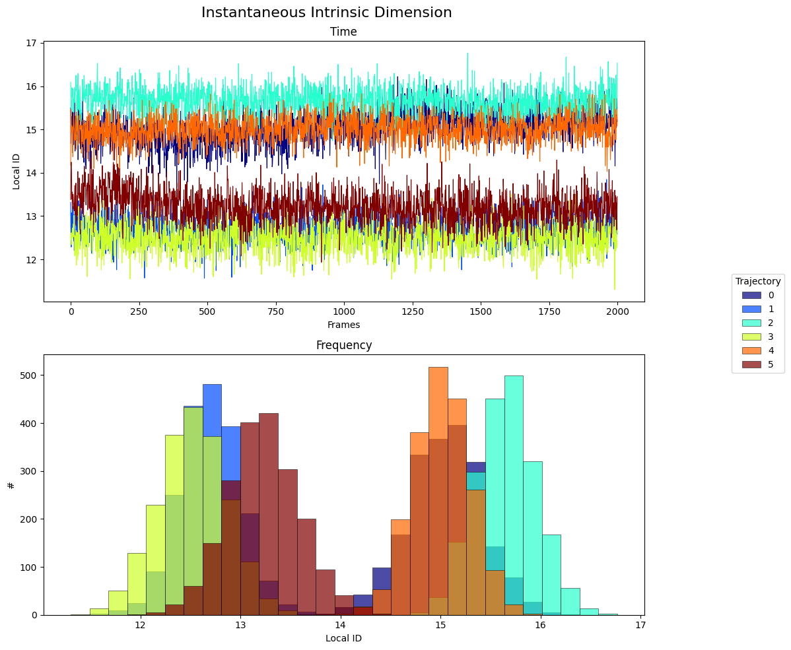

Examples
Another protein example: BBA, a synthetic peptide.
COMPLETAREEEEEEEEEE
#questo è solo per vedere se ho tagliato e nominato giusto, poi credo vada tolto o non mostrato in webpage
states = [0, 1, 2, 3, 4, 5]
colors = plt.cm.jet(np.linspace(0, 1, len(states)))
state_ids = []
fig, ax = plt.subplots(figsize=(10, 10), nrows=2)
fig.suptitle("Instantaneous Intrinsic Dimension", fontsize=16)
#instantaneous id
for i, s in enumerate(states):
mean_all, mean_last, local_id = intrinsic_dimension(topology='examples/BBA/1FME-0-protein.pdb', trajectory=f'examples/BBA/1FME_{s}.xtc', projection_method='Dihedrals', id_method='local', projection_kwargs={'step': 1}, verbose=False)
frames = np.arange(len(local_id))
state_ids.append(local_id)
ax[0].plot(frames, local_id, color=colors[i], linewidth=0.8)
ax[0].set_xlabel("Frames")
ax[0].set_ylabel("Local ID")
ax[0].set_title("Time")
#x[0].legend(bbox_to_anchor=(1.2, 0.5), loc="center right", title='Trajectory')
#####################
#id frequency
all_values = np.concatenate(state_ids) # common bin width
bins = np.linspace(all_values.min(), all_values.max(), 30)
for i, local_id in enumerate(state_ids):
ax[1].hist(local_id, bins=bins, alpha=0.7, label=f"{i}", color=colors[i], edgecolor='black', linewidth=0.5)
ax[1].set_xlabel("Local ID")
ax[1].set_ylabel("#")
ax[1].set_title("Frequency")
fig.legend(bbox_to_anchor=(1.20, 0.5), loc="center right", title='Trajectory')
plt.tight_layout()
plt.show()

proj = {'dihedrals':'psi'} #changed default angles to compute
states = [0, 1, 2, 3, 4, 5]
colors = plt.cm.jet(np.linspace(0, 1, len(states)))
all_results = []
for s in states:
results = section_id(topology='examples/BBA/1FME-0-protein.pdb', trajectory=f'examples/BBA/1FME_{s}.xtc', window_size = 15, stride = 3, projection_method='Dihedrals', id_method='global' , projection_kwargs=proj, verbose=False)
results["state"] = s
all_results.append(results)
results = pd.concat(all_results, ignore_index=True)
results['window'] = results["start"].astype(str) + "-" + results["end"].astype(str)
grouped_data = results.groupby(['state', 'window'], as_index=False)['entire simulation'].mean()
pivot_data = grouped_data.pivot(index='state', columns='window', values='entire simulation')
ordered_cols = sorted(pivot_data.columns, key=lambda w: int(w.split("-")[0]))
pivot_data = pivot_data[ordered_cols]
fig, axes = plt.subplots(2, 1, figsize=(10, 10))
fig.suptitle("Global Intrinsic Dimension", fontsize=16)
for state, color in zip(states, colors):
subset = results[results['state'] == state]
x = subset['window']
y = subset['entire simulation']
axes[0].scatter(x, y, color=color, edgecolor='black', linewidth=0.8, s=100, label=f"{state}")
axes[0].set_xticks(sorted(results['window'].unique(), key=lambda w: int(w.split("-")[0])))
axes[0].tick_params(axis='x', rotation=45)
axes[0].set_ylabel("Global ID")
axes[0].legend(title="Trajectory", bbox_to_anchor=(1.20, 0.5), loc='center right')
######
pivot_data.columns.name = None
sns.heatmap(pivot_data, cmap="OrRd", annot=True, fmt=".2f", ax=axes[1], cbar_kws={'label': 'Intrinsic dimension'})
axes[1].set_ylabel("Trajectory")
axes[1].tick_params(axis='x', rotation=45, labelrotation=45)
axes[1].tick_params(axis='y', rotation=0)
fig.supxlabel("Window")
plt.tight_layout()
plt.show()

proj = {'dihedrals': 'psi'}
states = [0, 1, 2, 3, 4, 5]
colors = plt.cm.jet(np.linspace(0, 1, len(states)))
all_results = []
ss_types = ['H', 'E', 'C']
ss_colors = {'H': 'mediumvioletred', 'E': 'steelblue', 'C': 'khaki'}
ss_assignments = []
residue_numbers = None
for s in states:
results, ss_table = secondary_structure_id(
topology='examples/BBA/1FME-0-protein.pdb',
trajectory=f'examples/BBA/1FME_{s}.xtc',
simplified=True,
projection_method='Dihedrals',
id_method='global',
projection_kwargs=proj,
verbose=False
)
results["state"] = s
if residue_numbers is None:
residue_numbers = ss_table['resid index'].values
ss_assignments.append(ss_table['sec str type'].values)
results['trajectory'] = s
all_results.append(results)
results = pd.concat(all_results, ignore_index=True)
results['window'] = results["start"].astype(str) + "-" + results["end"].astype(str)
grouped_data = results.groupby(['state', 'window'], as_index=False)['entire simulation'].mean()
pivot_data = grouped_data.pivot(index='state', columns='window', values='entire simulation')
ordered_cols = sorted(pivot_data.columns, key=lambda w: int(w.split("-")[0]))
pivot_data = pivot_data[ordered_cols]
ordered_windows = sorted(results['window'].unique(), key=lambda w: int(w.split("-")[0]))
results['window'] = pd.Categorical(results['window'], categories=ordered_windows, ordered=True)
fig, axes = plt.subplots(nrows=3, figsize=(15, 15))
fig.suptitle("Global Intrinsic Dimension", fontsize=16)
ss_to_num = {ss: i for i, ss in enumerate(ss_types)}
num_data = np.array([[ss_to_num[ss] for ss in row] for row in ss_assignments])
cmap = ListedColormap([ss_colors[ss] for ss in ss_types])
im = axes[0].imshow(num_data, aspect='auto', cmap=cmap,
extent=[residue_numbers[0]-0.5, residue_numbers[-1]+0.5, len(states)-0.5, -0.5])
for x in np.arange(residue_numbers[0]-0.5, residue_numbers[-1]+1.5, 1):
axes[0].axvline(x=x, color='white', linewidth=0.5, alpha=0.5)
for y in np.arange(-0.5, len(states)+0.5, 1):
axes[0].axhline(y=y, color='white', linewidth=0.5, alpha=0.5)
axes[0].grid(False)
axes[0].set_xticks(residue_numbers.astype(float))
axes[0].set_yticks(np.arange(len(states)))
axes[0].set_yticklabels([f"{t}" for t in states])
axes[0].set_xlabel('Residue Number')
axes[0].tick_params(axis='x', rotation=50)
legend_elements = [plt.Rectangle((0, 0), 1, 1, color=ss_colors[ss], label=ss) for ss in ss_types]
axes[0].legend(handles=legend_elements, bbox_to_anchor=(1.02, 1), loc='upper left',
title='Secondary Structure', frameon=False, facecolor='white')
for state, color in zip(states, colors):
subset = results[results['state'] == state]
x = subset['window']
y = subset['entire simulation']
axes[1].scatter(x, y, color=color, edgecolor='black', linewidth=0.8, s=100, label=f"{state}")
axes[1].set_xticks(ordered_windows)
axes[1].tick_params(axis='x', rotation=45)
axes[1].set_ylabel("Global ID")
pivot_data.columns.name = None
sns.heatmap(pivot_data, cmap="OrRd", annot=True, fmt=".2f", ax=axes[2], cbar_kws={'label': 'Intrinsic dimension'})
axes[2].tick_params(axis='x', rotation=45, labelrotation=45)
axes[2].tick_params(axis='y', rotation=0)
fig.supxlabel("Window")
plt.tight_layout()
plt.show()
2025-08-04 18:36:23,909 - matplotlib.category - INFO - Using categorical units to plot a list of strings that are all parsable as floats or dates. If these strings should be plotted as numbers, cast to the appropriate data type before plotting.
2025-08-04 18:36:23,910 - matplotlib.category - INFO - Using categorical units to plot a list of strings that are all parsable as floats or dates. If these strings should be plotted as numbers, cast to the appropriate data type before plotting.
2025-08-04 18:36:23,912 - matplotlib.category - INFO - Using categorical units to plot a list of strings that are all parsable as floats or dates. If these strings should be plotted as numbers, cast to the appropriate data type before plotting.
2025-08-04 18:36:23,914 - matplotlib.category - INFO - Using categorical units to plot a list of strings that are all parsable as floats or dates. If these strings should be plotted as numbers, cast to the appropriate data type before plotting.
2025-08-04 18:36:23,918 - matplotlib.category - INFO - Using categorical units to plot a list of strings that are all parsable as floats or dates. If these strings should be plotted as numbers, cast to the appropriate data type before plotting.
2025-08-04 18:36:23,920 - matplotlib.category - INFO - Using categorical units to plot a list of strings that are all parsable as floats or dates. If these strings should be plotted as numbers, cast to the appropriate data type before plotting.